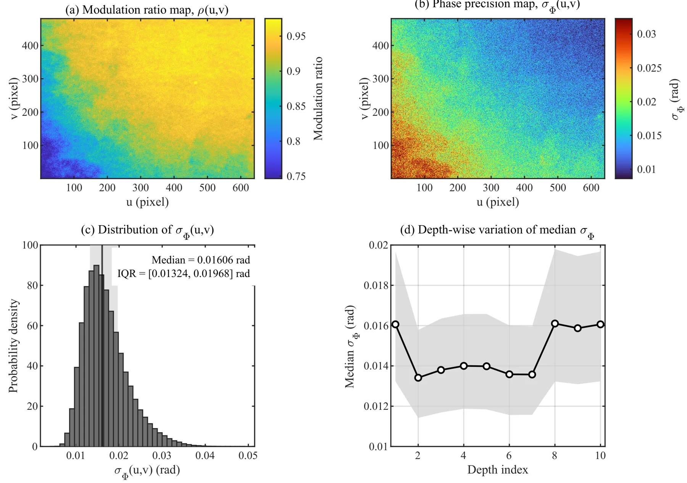
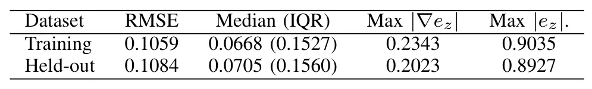
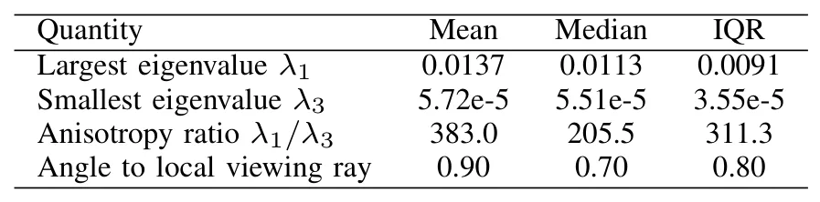
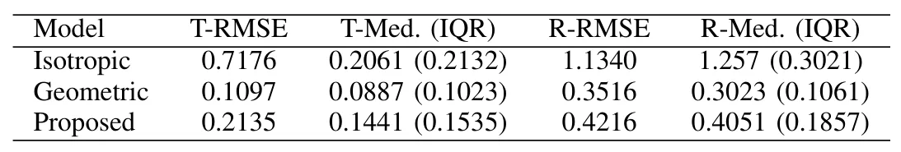

结构光三维成像的传感器感知逐点协方差Sensor-Informed Per-Point Covariance for Structured-Light 3D Imaging
与概率点云配准、融合和质量评估直接相关，且实验显示优于常数协方差；跨材质、距离和实际复杂场景的稳健性待验证。
一句话工作总结
从结构光相位噪声和标定映射推导各向异性逐点协方差，为 G-ICP 提供物理来源明确的不确定度。
摘要
论文从 fringe projection profilometry 的实际测量过程出发，依据实验相位精度、相位到深度及相位到三维的标定映射，构造逐点 3×3 covariance field。方法将 phase noise 传播为 rank-1 covariance，并加入拟合的横向图像空间扰动尺度形成有效 full-rank completion。重复平面实验显示主协方差方向与 viewing ray 接近，主相位不确定度尺度也与标量深度不确定度一致；在 G-ICP registration 中明显优于常数各向同性模型。
Per-point uncertainty models are important in structured-light 3D reconstruction for probabilistic registration, fusion, and quality assessment. In practice, however, point-cloud covariances are often modeled as isotropic constants or inferred from local surface geometry and therefore do not explicitly reflect the measurement process. This is a limitation in fringe projection profilometry (FPP), where phase noise propagates through calibrated reconstruction and produces strongly anisotropic 3D uncertainty. This paper presents a sensor-informed first-order method for constructing a per-point 3 x 3 covariance field from experimentally measured phase precision and calibrated phase-to-depth and phase-to-3D mappings. The formulation separates a rank-1 phase-induced covariance from an effective full-rank completion obtained by incorporating fitted lateral image-space perturbation scales. Repeated-plane experiments under fixed imaging conditions show close alignment of the dominant covariance direction with the viewing ray, and consistency between the dominant phase-induced uncertainty scale and scalar depth uncertainty. In G-ICP registration, the proposed covariance substantially improves over a constant isotropic model while providing a sensor-derived uncertainty representation complementary to conventional geometry-based covariances.
中文解读摘录
图表/页面预览

{kind=link}

{kind=link}

{kind=link}

{kind=link}
